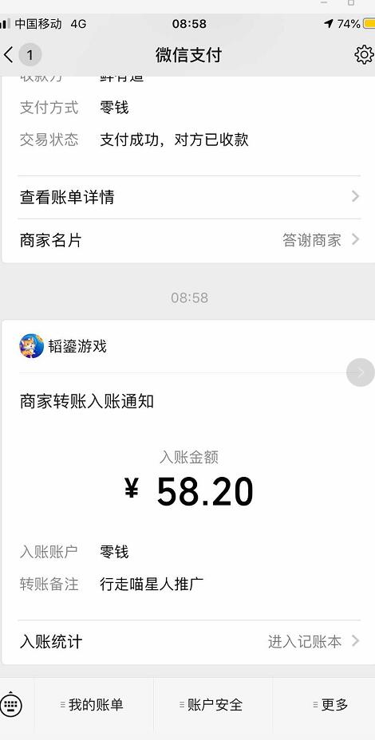

村长接触行走的喵星人已经快2周了，那么，行走的喵星人怎么赚钱？是真的吗？通过村长大概一周左右的测试，行走的喵星人这款APP，赚钱应该是真的，但是，大部分人是赚不多了，大部分人，估计一周能够赚50-100元就已经不错了，只有专业推广员才有能一天赚几百元，听说有人一天赚300元到底是怎么回事呢？
其实，不管是骗子还是真的可以赚钱的软件，大家如果有时间就可以试试去，村长上一篇文章《行走喵星人app赚钱是真的吗 ？填写邀请码奖励多吗？》，是建议大家不要下载，不要去玩，现在收回这句话，因为，当时确实很多人反映提现不了，所以，村长建议大家不要去玩了，如今群里已经说可以提现了，证明是可以提现的。
行走的喵星人怎么赚钱？是真的吗？听说一天赚300元？
但是，村长现在也不能100%的相信，因为，村长目前，才提现0.3元，因为，村长没有去推广，基本上是一个人去做，因为想测试一下，行走的喵星人是不是真的赚钱，测试结果看来，应该是可以赚钱的，但是，对于你没有做任何推广来说，就发展几个亲朋好友的话，一周应该可以赚50-100元，现在60元就可以提现，只要提现金额不变，是完全可以赚个零花钱的。
如果你有时间，不妨也下载一个行走的喵星人，无论是安卓手机还是苹果手机，哪个平台都可以下载，你只需搜就行，或者直接扫村长给您的二维码下载，下载完以后，记得填写邀请码：kgtlfe，会有奖励哦！不领白不领！

当然，村长也要继续测试，看看到底真的能不能提现，目前，村长已经有57.60元，明天就差不多60多了，这是大概一周的测试时间（村长并非每天都把任务做完，如果都做满，早提现了），上面说了，村长没有去推广，基本上就几个人玩而已。
如果你玩的话，首先下载，下载以后，填写邀请码：kgtlfe，然后，每天把任务完成（尤其是探索次数，最好刷完。），你也可以把我的邀请码推荐给你的朋友，或者把你的邀请码推荐给别人，依次类推，就这样大家都能赚到钱了，放心，你填写不填写邀请码，你该赚多少钱，还是多少钱，村长是不会分你赚的一分钱的。你填写了邀请码以后，可以领到很多奖励，这样让你升级更快一些，争取早日赚到钱，何乐而不为的呢？
反过头来说听说一天赚300元这个问题，他是怎么做到的？
运气+努力，村长认为运气大于努力，为什么这么说呢？进度条100%必得神器，每天获得奖励300到500元不等，此外神器也可以通过集5种逗猫玩具获得，或者在探索地图概率获得。进度条达到100%，据数据统计，应该还没有人完成，官方的40级，也没有人做到，截止到现在，村长见过最高的级别是33级，所以，该同学得到神器，估计是运气多一些。

重点说一下三神器，这个是通过进度条100%获得的，也可以通过集5种逗猫玩具合成，在探索地图也能概率获得。只有皇冠神器获得的收益是永久的，每天500元，而铃铛神器和金盆神器都是有期限的，铃铛神器每天300元，期限100天，金盆神器每天400元期限一年。
总之呢？行走的喵星人大部分人只能赚个零花，比如每周50元，那么，一个月就能赚400元，400元，也可以买很多东西呢，所以，如果你只是想赚个零花，不妨玩玩它，如果你想赚大钱，那你需要下点功夫了，当然，这个软件也是出来不久，现在正是可以赚钱的好机会，过一段时间可能力度就变小了，到时候就赚不到钱了，所以，赶紧抓紧下载吧。最后，再说一句：下载以后，记得填写邀请码：kgtlfe
2020-8-20，村长的行走的喵星人提现了，截图如下：（今天刚提现的，现在是满60元可以提现，今天是秒到账，本来，村长认为估计等几天，没有想到真的是秒到账）


当然，它有3%的手续费，提现以后，就剩下0.18了，所以，如果你想赚点零花钱的话，可以下载一个玩玩，大概玩一周左右，就能赚60元，赚点零花钱可以。下载以后，填写邀请码：kgtlfe，然后，每天把任务完成（尤其是探索次数，最好刷完。）